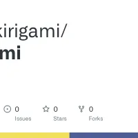

Plugins
Official Kirigami plugins — install one, or write your own.
A plugin is an npm package — @kirigami/plugin-*, or your own under the same convention — declared under plugins: in kirigami.yaml. It taps into the same tag/hook registry a project's own prepros.includes file does (see Writing pages), just packaged and versioned for reuse across projects.
kiri install highlight
resolves a bare name against the @kirigami/plugin-* convention, installs it, and prints the plugins: block to paste into kirigami.yaml — see the CLI reference for the full command. Three official plugins ship today; this page demos each one live. The complete list, with versions fetched live from npm, is on Ecosystem.
@kirigami/plugin-highlight
Syntax highlighting, resolved at build time — zero bytes of highlight.js reach the browser.
You're already looking at the demo: every fenced code block on this entire site — the one above included — is colored by this plugin, its theme layered on via sass:after and tuned to match the site's own palette instead of a generic preset. Also registers a <highlight lang="…"> authoring tag, and a hover copy button on every block.
@kirigami/plugin-extlink
External link preview cards — scraped once, at build time, and cached to disk.
<extlink src="…"> scrapes the target page's title, description, preview image and site name, then caches every bit of it — _data/extlink/, assets/extlink/, assets/images/extlink/, meant to be committed — so a later build, CI included, never re-crawls a URL it has already resolved:

php-kirigami/kirigami: Core package Core package. Contribute to php-kirigami/kirigami development by creating an account on GitHub. GitHub@kirigami/plugin-embed
YouTube / Vimeo oEmbed cards — resolved in the visitor's own browser, nothing fetched at build time.
<youtube id="…"> / <vimeo id="…"> swap themselves for a cover thumbnail, the video's title, and a play button the moment the page loads — the oEmbed lookup runs client-side, cached in localStorage, and nothing actually loads from the provider until that button is clicked:
Writing your own
A plugin's package exports a default function; kiri calls it once, at the top of every build/export/watch, with its options: from kirigami.yaml. From there it's the exact same @kirigami/sdk hook registry a project's own prepros.includes file can reach into. Writing a plugin → walks through building one from scratch — package shape, registering a tag, shipping default styles, the options schema, and a couple of gotchas that only show up once you actually try it. The three plugins above are real, MIT-licensed, source-linked examples to read alongside it — plugin-highlight's index.js is the shortest complete one.